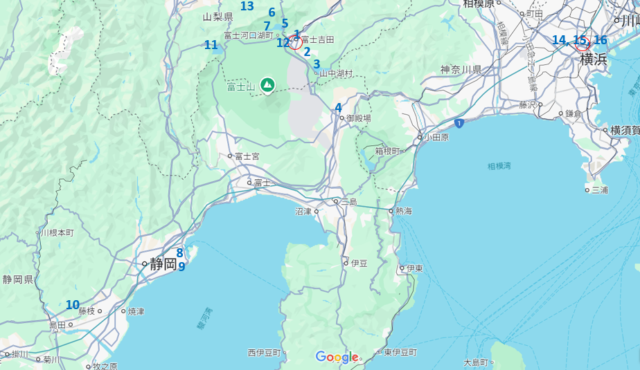

Hello các bạn nhỏ... Dưới đây là lịch trình tạm thời cho chuyến đi cuối năm nay nha! Mấy đứa xem ok không, nếu có ý tưởng hay bất cứ thứ gì muốn đổi thì cứ la lên nha. Tính ngày 31 là về nhưng thấy gần cảng Yokohama nên tính là ở thêm 1 đêm 31 ở Yokohama đón giao thừa, rồi sáng mùng 1 đi khu thuỷ cung chơi, chiều về là đẹp... Mà book khách sạn ở Yokohama khá khó nên nếu tụi em OK đêm 31 ở Yokohama thì book sớm luôn để hết phòng. Có thông tin khách sạn ở dưới.
★Địa điểm số 8 tới 13 thì chắc không đi kịp...ai muốn đi đâu thì bàn lại lịch nha!
観光地の地図
赤い〇：宿泊場所、青いNo：観光地
| ホテル名 | ビジネスホテル芙蓉(Fuyo) | シンプルホテル共栄 |
|---|---|---|
| Google Map | 〒403-0005 山梨県富士吉田市上吉田３丁目１３−１７ | 〒231-0026神奈川県横浜市中区寿町3-12-8 |
| Phone | 0555-22-2300 | 045-263-9190 |
| プラン | 和室B | - |
| Check in-out | 17:00～、～10:00 | 18:00～、～12:00 |
| 宿泊日 | 29,30 | 31 |
| 部屋 | 1部屋4人 | 1部屋2人、1部屋1人 |
| 元の料金 | 36.000円 | 部屋2人:7000円、 部屋1人:3800円 |
| 1人分の料金 | 9.000円 | 部屋2人:3500円/人、 部屋1人:3800円 |
| 予約金 | 不要 | 必要 |
| キャンセル料金 | 2日前: 30%、1日前: 50%、当日: 100% | 当日前無料 |
| 支払方法 | 現地、 オンラインカード | 100%支払済 |
| 予約ID | 6KAK2TFM | RYa0j5z1sz |